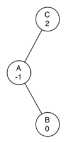

In the previous section we looked at building a binary search tree. As we learned, the performance of the binary search tree can degrade to \(O(n)\) for operations like get and put when the tree becomes unbalanced. In this section we will look at a special kind of binary search tree that automatically makes sure that the tree remains balanced at all times. This tree is called an AVL tree and is named for its inventors: G.M. Adelson-Velskii and E.M. Landis.
An AVL tree implements the Map abstract data type just like a regular binary search tree, the only difference is in how the tree performs. To implement our AVL tree we need to keep track of a balance factor for each node in the tree. We do this by looking at the heights of the left and right subtrees for each node. More formally, we define the balance factor for a node as the difference between the height of the left subtree and the height of the right subtree.
Using the definition for balance factor given above we say that a subtree is left-heavy if the balance factor is greater than zero. If the balance factor is less than zero then the subtree is right heavy. If the balance factor is zero then the tree is perfectly in balance. For purposes of implementing an AVL tree, and gaining the benefit of having a balanced tree we will define a tree to be in balance if the balance factor is -1, 0, or 1. Once the balance factor of a node in a tree is outside this range we will need to have a procedure to bring the tree back into balance. Figure {fig:unbal} shows an example of an unbalanced, right-heavy tree and the balance factors of each node.
{An Unbalanced Right-Heavy Tree with Balance Factors} {fig:unbal}
{sec:avl-tree-performance}
Before we proceed any further lets look at the result of enforcing this new balance factor requirement. Our claim is that by ensuring that a tree always has a balance factor of -1, 0, or 1 we can get better Big-O performance of key operations. Let us start by thinking about how this balance condition changes the worst-case tree. There are two possibilities to consider, a left-heavy tree and a right heavy tree. If we consider trees of heights 0, 1, 2, and 3, Figure {fig:worstAVL} illustrates the most unbalanced left-heavy tree possible under the new rules.
{Worst-Case Left-Heavy AVL Trees} {fig:worstAVL}
Looking at the total number of nodes in the tree we see that for a tree of height 0 there is 1 node, for a tree of height 1 there is \(1+1 = 2\) nodes, for a tree of height 2 there are \(1+1+2 = 4\) and for a tree of height 3 there are \(1 + 2 + 4 = 7\). More generally the pattern we see for the number of nodes in a tree of height h (\(N_h\)) is:
This recurrence may look familiar to you because it is very similar to the Fibonacci sequence. We can use this fact to derive a formula for the height of an AVL tree given the number of nodes in the tree. Recall that for the Fibonacci sequence the \(i_{th}\) Fibonacci number is given by:
An important mathematical result is that as the numbers of the Fibonacci sequence get larger and larger the ratio of \(F_i / F_{i-1}\) becomes closer and closer to approximating the golden ratio \(\Phi\) which is defined as \(\Phi = \frac{1 + \sqrt{5}}{2}\). You can consult a math text if you want to see a derivation of the previous equation. We will simply use this equation to approximate \(F_i\) as \(F_i = \Phi^i/\sqrt{5}\). If we make use of this approximation we can rewrite the equation for \(N_h\) as:
By replacing the Fibonacci reference with its golden ratio approximation we get:
If we rearrange the terms, and take the base 2 log of both sides and then solve for \(h\) we get the following derivation: .. math:
\log{N_h+1} = (H+2)\log{\Phi} - \frac{1}{2} \log{5} \\
h = \frac{\log{N_h+1} - 2 \log{\Phi} + \frac{1}{2} \log{5}}{\log{\Phi}} \\
h = 1.44 \log{N_h}
This derivation shows us that at any time the height of our AVL tree is equal to a constant(1.44) times the log of the height of the tree. This is great news for searching our AVL tree because it limits the search to \(O(\log{N})\).
{sec:avl-tree-impl}
Now that we have demonstrated that keeping an AVL tree in balance is going to be a big performance improvement, let us look at how we will augment the procedure to insert a new key into the tree. Since all new keys are inserted into the tree as leaf nodes and we know that the balance factor for a new leaf is zero, there are no new requirements for the node that was just inserted. But once the new leaf is added we must update the balance factor of its parent. How this new leaf affects the parent’s balance factor depends on whether the leaf node is a left child or a right child. If the new node is a right child the balance factor of the parent will be reduced by one. If the new node is a left child then the balance factor of the parent will be increased by one. This relation can be applied recursively to the grandparent of the new node, and possibly to every ancestor all the way up to the root of the tree. Since this is a recursive procedure let us examine the two base cases for updating balance factors:
We will implement the AVL tree as a subclass of BinarySearchTree. To begin, we will override the {_put} method and write a new updateBalance helper method. These methods are shown in Listing {lst:updbal}. You will notice that the definition for {_put} is exactly the same as in Listing {lst:bstput} except for the additions of the calls to updateBalance on lines {balput:up1} and {balput:up2}.
[float=htb,caption=Updating Balance Factors,label=lst:updbal]
def _put(self,key,val,currentNode):
if key < currentNode.key:
if currentNode.hasLeftChild():
self._put(key,val,currentNode.leftChild)
else:
currentNode.leftChild = TreeNode(key,val,
parent=currentNode)
self.updateBalance(currentNode.leftChild) #// \label{balput:up1}
else:
if currentNode.hasRightChild():
self._put(key,val,currentNode.rightChild)
else:
currentNode.rightChild = TreeNode(key,val,
parent=currentNode)
self.updateBalance(currentNode.rightChild) #// \label{balput:up2}
def updateBalance(self,node):
if node.balanceFactor > 1 or node.balanceFactor < -1: #// \label{updbal:check}
self.rebalance(node) #// \label{updbal:rebal}
return
if node.parent != None:
if node.isLeftChild():
node.parent.balanceFactor += 1
elif node.isRightChild():
node.parent.balanceFactor -= 1
if node.parent.balanceFactor != 0:
self.updateBalance(node.parent)
The new updateBalance method is where most of the work is done. This implements the recursive procedure we just described. The updateBalance method first checks to see if the current node is out of balance enough to require rebalancing (line {updbal:check}). If that is the case then the rebalancing is done and no further updating to parents is required. If the current node does not require rebalancing then the balance factor of the parent is adjusted. If the balance factor of the parent is non-zero then the algorithm continues to work its way up the tree toward the root by recursively calling updateBalance on the parent.
When a rebalancing of the tree is necessary, how do we do it? Efficient rebalancing is the key to making the AVL Tree work well without sacrificing performance. In order to bring an AVL Tree back into balance we will perform one or more rotations on the tree.
To understand what a rotation is let us look at a very simple example. Consider the tree in the left half of Figure {fig:unbalsimp}. This tree is out of balance with a balance factor of -2. To bring this tree into balance we will use a left rotation around the subtree rooted at node A.
{Transforming an Unbalanced Tree into a Balanced Tree Using a Left Rotation} {fig:unbalsimp}
To perform a left rotation we essentially do the following:
While this procedure is fairly easy in concept, the details of the code are a bit tricky since we need to move things around in just the right order so that all properties of a Binary Search Tree are preserved. Furthermore we need to make sure to update all of the parent pointers appropriately.
Lets look at a slightly more complicated tree to illustrate the right rotation. The left side of Figure {fig:rightrot1} shows a tree that is left-heavy and with a balance factor of 2 at the root. To perform a right rotation we essentially do the following:
Promote the left child (C) to be the root of the subtree.
Move the old root (E) to be the right child of the new root.
If the new root(C) already had a right child (D) then make it the left child of the new right child (E). Note: Since the new root (C) was the left child of E, the left child of E is guaranteed to be empty at this point. This allows us to add a new node as the left child without any further consideration.
{Transforming an Unbalanced Tree into a Balanced Tree Using a Right Rotation} {fig:rightrot1}
Now that you have seen the rotations and have the basic idea of how a rotation works let us look at the code. Listing {lst:rots} shows the code for both the right and the left rotations. In line {rotleft:temp} we create a temporary variable to keep track of the new root of the subtree. As we said before the new root is the right child of the previous root. Now that a reference to the right child has been stored in this temporary variable we replace the right child of the old root with the left child of the new.
The next step is to adjust the parent pointers of the two nodes. If newRoot has a left child then the new parent of the left child becomes the old root. The parent of the new root is set to the parent of the old root. If the old root was the root of the entire tree then we must set the root of the tree to point to this new root. Otherwise, if the old root is a left child then we change the parent of the left child to point to the new root; otherwise we change the parent of the right child to point to the new root. (lines {rotleft:p1}–{rotleft:p2}). Finally we set the parent of the old root to be the new root. This is a lot of complicated bookkeeping, so we encourage you to trace through this function while looking at Figure {fig:unbalsimp}. The rotateRight method is symmetrical to rotateLeft so we will leave it to you to study the code for rotateRight.
[label=lst:rots,float=htb,caption=Left and Right Rotations]
def rotateLeft(self,rotRoot):
newRoot = rotRoot.rightChild #// \label{rotleft:temp}
rotRoot.rightChild = newRoot.leftChild
if newRoot.leftChild != None:
newRoot.leftChild.parent = rotRoot
newRoot.parent = rotRoot.parent
if rotRoot.isRoot():
self.root = newRoot
else:
if rotRoot.isLeftChild(): #// \label{rotleft:p1}
rotRoot.parent.leftChild = newRoot
else:
rotRoot.parent.rightChild = newRoot #// \label{rotleft:p2}
newRoot.leftChild = rotRoot
rotRoot.parent = newRoot
rotRoot.balanceFactor = rotRoot.balanceFactor + 1 \ #// \label{rotleft:bf1}
- min(newRoot.balanceFactor, 0)
newRoot.balanceFactor = newRoot.balanceFactor + 1 \
+ max(rotRoot.balanceFactor, 0) #// \label{rotleft:bf2}
Finally, lines {rotleft:bf1}–{rotleft:bf2} require some explanation. In these two lines we update the balance factors of the old and the new root. Since all the other moves are moving entire subtrees around the balance factors of all other nodes are unaffected by the rotation. But how can we update the balance factors without completely recalculating the heights of the new subtrees? The following derivation should convince you that these lines are correct.
{A Left Rotation} {fig:bfderive}
Figure {fig:bfderive} shows a left rotation. B and D are the pivotal nodes and A, C, E are their subtrees. Let \(h_x\) denote the height of a particular subtree rooted at node \(x\). By definition we know the following:
But we know that the old height of D can also be given by \(1 + max(h_C,h_E)\), that is, the height of D is one more than the maximum height of its two children. Remember that \(h_c\) and \(h_E\) hav not changed. So, let us substitute that in to the second equation, which gives us :math:` oldBal(B) = h_A - (1 + max(h_C,h_E))` and then subtract the two equations. The following steps do the subtraction and use some algebra to simplify the equation for \(newBal(B)\).
Next we will move \(oldBal(B)\) to the right hand side of the equation and make use of the fact that \(max(a,b)-c = max(a-c, b-c)\).
But, \(h_E - h_C\) is the same as \(-oldBal(D)\). So we can use another identity that says \(max(-a,-b) = -min(a,b)\). So we can finish our derivation of \(newBal(B)\) with the following steps:
Now we have all of the parts in terms that we readily know. If we remember that B is rotRoot and D is newRoot then we can see this corresponds exactly to the statement on line {rotleft:bf1}, or:
rotRoot.balanceFactor =
rotRoot.balanceFactor + 1 - min(0,newRoot.balanceFactor)
A similar derivation gives us the equation for the updated node D, as well as the balance factors after a right rotation. We leave these as exercises for you.
Now you might think that we are done. We know how to do our left and right rotations, and we know when we should do a left or right rotation, but take a look at Figure {fig:hardrotate}. Since node A has a balance factor of -2 we should do a left rotation. But, what happens when we do the left rotation around A?
{An Unbalanced Tree That is More Difficult to Balance} {fig:hardrotate}
Figure {fig:badrotate} shows us that after the left rotation we are now out of balance the other way. If we do a right rotation to correct the situation we are right back where we started.
 {After a Left Rotation the Tree Is Out of Balance in the Other Direction} {fig:badrotate}
To correct this problem we must use the following set of rules:
Figure {fig:rotatelr} shows how these rules solve the dilemma we encountered in Figures {fig:hardrotate} and {fig:badrotate}. Starting with a right rotation around node C puts the tree in a position where the left rotation around A brings the entire subtree back into balance.
{A Right Rotation Followed by a Left Rotation} {fig:rotatelr}
The code that implements these rules can be found in our rebalance method, which is shown in Listing {lst:rebalance}. Rule number 1 from above is implemented by the if statement starting on line {rot:lr}. Rule number 2 is implemented by the elif statement starting on line {rot:rl}.
[label=lst:rebalance,float=htb,caption=Rebalancing Rules Implemented]
def rebalance(self,node):
if node.balanceFactor < 0: #// \label{rot:lr}
if node.rightChild.balanceFactor > 0:
self.rotateRight(node.rightChild)
self.rotateLeft(node)
else:
self.rotateLeft(node)
elif node.balanceFactor > 0: #// \label{rot:rl}
if node.leftChild.balanceFactor < 0:
self.rotateLeft(node.leftChild)
self.rotateRight(node)
else:
self.rotateRight(node)
The discussion questions provide you the opportunity to rebalance a tree that requires a left rotation followed by a right. In addition the discussion questions provide you with the opportunity to rebalance some trees that are a little more complex than the tree in Figure {fig:rotatelr}.
By keeping the tree in balance at all times, we can ensure that the get method will run in order \(O(log_2(n))\) time. But the question is at what cost to our put method? Let us break this down into the operations performed by put. Since a new node is inserted as a leaf, updating the balance factors of all the parents will require a maximum of \(log_2(n)\) operations, one for each level of the tree. If a subtree is found to be out of balance a maximum of two rotations are required to bring the tree back into balance. But, each of the rotations works in \(O(1)\) time, so even our put operation remains \(O(log_2(n))\).
At this point we have implemented a functional AVL-Tree, unless you need the ability to delete a node. We leave the deletion of the node and subsequent updating and rebalancing as an exercise for you.
{sec:summary-map-adt}
Over the past two chapters we have looked at several data structures that can be used to implement the map abstract data type. A binary Search on a list, a hash table, a binary search tree, and a balanced binary search tree. To conclude this section, let’s summarize the performance of each data structure for the key operations defined by the map ADT.
| put | \(O(n)\) | \(O(1)\) | \(O(n)\) | \(O(\log_2{n})\) |
| get | \(O(\log_2{n})\) | \(O(1)\) | \(O(n)\) | \(O(\log_2{n})\) |
| in | \(O(\log_2{n})\) | \(O(1)\) | \(O(n)\) | \(O(\log_2{n})\) |
| del | \(O(n))\) | \(O(1)\) | \(O(n)\) | \(O(\log_2{n})\) |
{Comparing the Performance of Different Map Implementations} {tab:mapcompare}